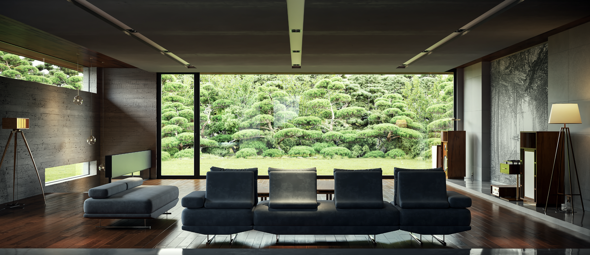
Above / The Park View
Light, garden and control.
Vanuit de villa voelt de wereld rustig en beheerst. Het raam kadert een tuin die veilig, stil en beschermd lijkt.
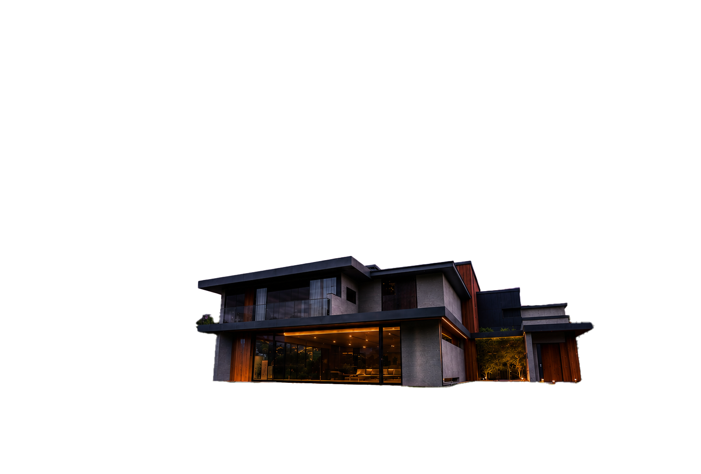
Parasite laat sociale ongelijkheid zien als een wereld van boven en beneden: luxe voor de één, overleven voor de ander.
Scroll naar beneden
02 / De Villa
Boven staat de villa van de Park-familie. Een huis vol licht, ruimte en rust. Alles voelt open, schoon en gecontroleerd. De tuin ligt stil achter het grote raam. De stad lijkt ver weg. Hier voelt rijkdom bijna vanzelfsprekend.
Maar ergens lager in dezelfde stad woont de Kim-familie. Hun huis is klein, vol en half onder de grond. Hun raam kijkt niet uit op groen, maar op de straat. Waar de Parks ruimte hebben om te ademen, leven de Kims met druk, onzekerheid en schaamte.
In Parasite vertelt het huis meer dan de personages zelf. Wie boven woont, leeft in licht. Wie beneden woont, moet vechten om gezien te worden.
“Architecture shows who gets to live in the light.”
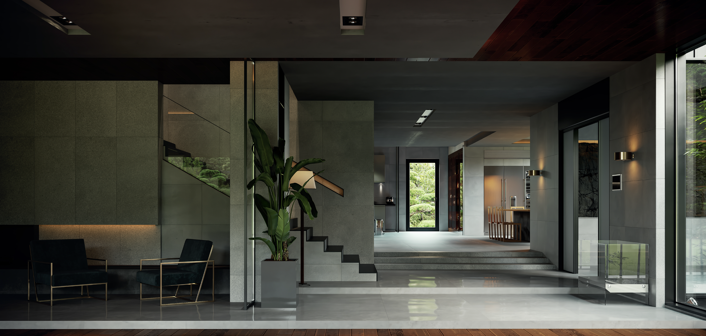
De Park-familie leeft boven, in licht, openheid en comfort. Hun villa voelt veilig en leeg op een luxe manier: alles is netjes, ruim en onder controle.
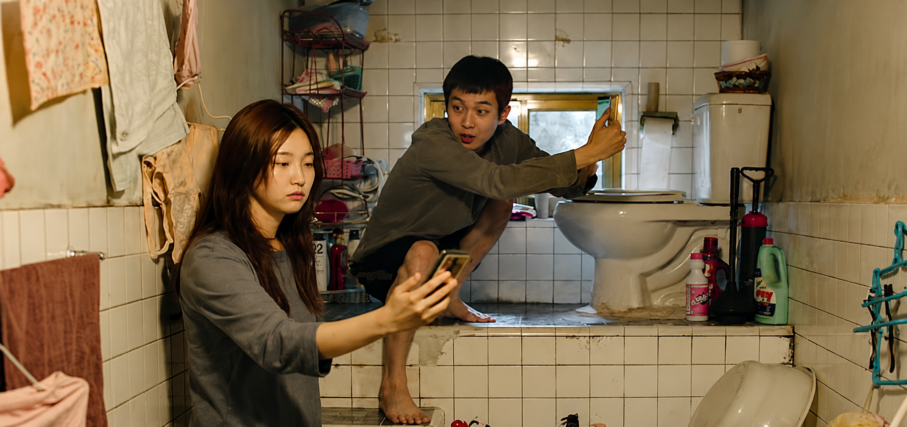
De Kim-familie leeft lager, in een ruimte die voller, donkerder en kwetsbaarder voelt. Hun woning maakt armoede niet alleen zichtbaar, maar ook voelbaar.
Ongelijkheid gaat hier niet alleen over geld. Het gaat over ruimte, licht, uitzicht en de vraag wie zichtbaar mag zijn.
03 / Uitzicht
De ramen in Parasite laten zien hoe klasse je blik op de wereld bepaalt. De Parks kijken uit op een rustige tuin. De Kims kijken uit op de straat, vuil en chaos. Beide families leven in dezelfde stad, maar hun uitzicht is compleet anders.
Zo wordt sociale ongelijkheid niet alleen verteld, maar zichtbaar gemaakt door beeld, ruimte en perspectief.

Above / The Park View
Vanuit de villa voelt de wereld rustig en beheerst. Het raam kadert een tuin die veilig, stil en beschermd lijkt.
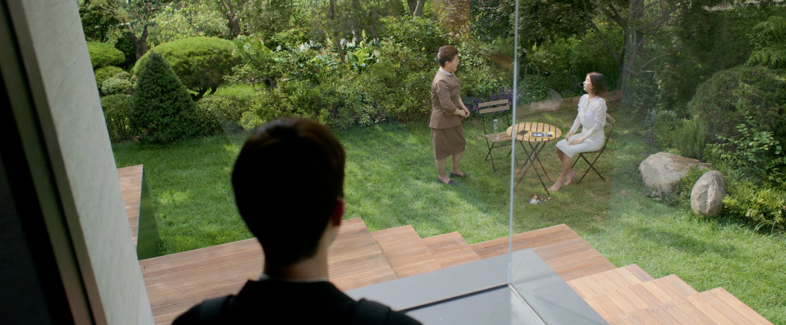
Above / The Garden
De tuin staat voor rust en afstand. Voor de Parks is natuur iets waar ze naar kunnen kijken zonder de chaos van de stad te voelen.
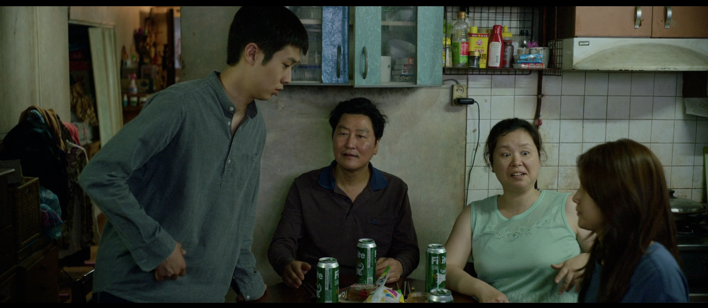
Below / The Kim Family
Bij de Kims voelt alles dichter op elkaar. Hun huis laat zien hoe armoede niet alleen over geld gaat, maar ook over spanning, schaamte en overleven.
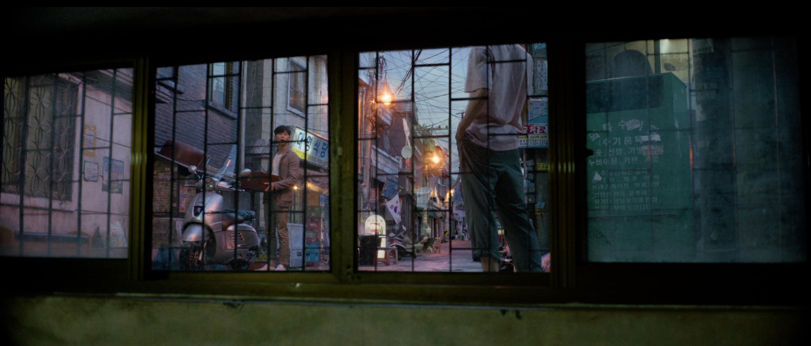
Below / The Kim Window
Het raam van de Kims kijkt niet uit op een tuin, maar op de straat. Ze leven letterlijk lager en ervaren de stad vanuit een kwetsbare positie.
04 / De afdaling begint
Vanaf hier begint de afdaling. De villa lijkt rustig en perfect, maar hoe verder je kijkt, hoe meer zichtbaar wordt wat onder die mooie buitenkant verborgen blijft.
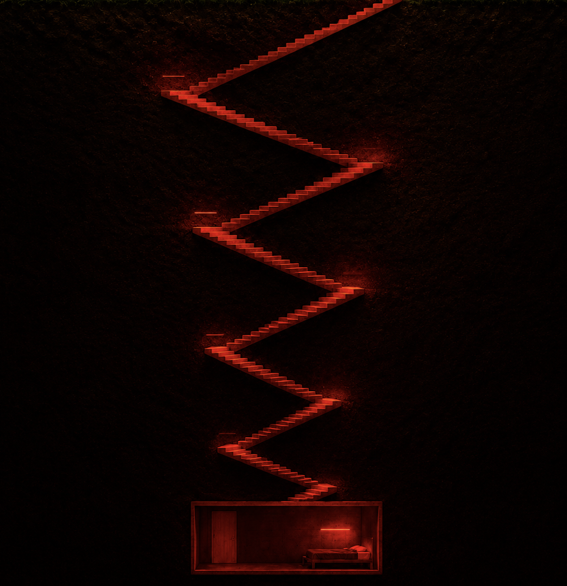
04 / De trap
In Parasite betekent elke trap iets. Om bij de villa te komen, moet je omhoog. De wegen stijgen, de trappen worden langer, de huizen worden groter. Rijkdom ligt letterlijk hoger.
Maar zodra de illusie breekt, gaat alles naar beneden. Naar de voorraadruimte. Naar de geheime trap. Naar de kelder. Hoe lager je komt, hoe meer de villa haar perfecte buitenkant verliest.
In mijn website wordt scrollen daarom een afdaling. Je begint boven, bij licht en luxe. Daarna zak je steeds verder naar beneden. Niet alleen door de pagina, maar door het systeem achter de film.
“Every staircase reveals a social ladder.”
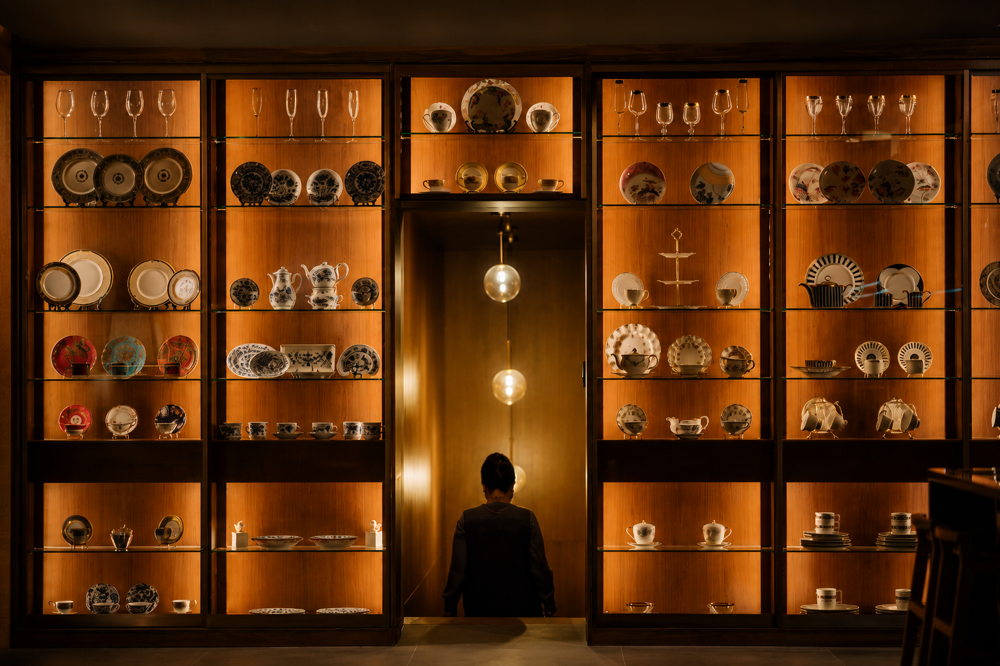
04 / Naar beneden
Van binnen lijkt de villa perfect. Alles is rustig, ruim en mooi ingericht. De wereld van de Parks voelt alsof niets mis kan gaan.
Maar juist onder die perfecte buitenkant zit iets verborgen. Het huis laat niet meteen zien wat eronder leeft. De luxe bovenwereld bestaat naast een donkere onderlaag die niemand wil zien.
“What looks perfect above, hides something below.”
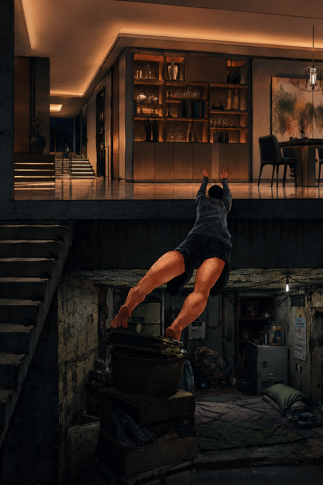
05 / Boven en beneden
Boven is er comfort. Beneden is er overleven. Dat contrast is de kern van Parasite.
De Parks leven in een wereld van ruimte, zonlicht en controle. De Kims leven in een wereld van krapte, donkerte en onzekerheid. Ze wonen dicht bij elkaar, maar hun levens voelen alsof ze in verschillende werelden bestaan.
De grens tussen boven en beneden is niet alleen een verdieping in een huis. Het is een sociale grens: tussen gezien worden en verdwijnen.
“Above is comfort. Below is survival.”
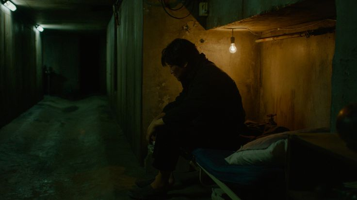
06 / De Kelder
Onder de villa zit nog een andere wereld. Een plek zonder uitzicht, zonder licht en zonder vrijheid. De kelder maakt zichtbaar wat normaal verborgen blijft.
De villa lijkt perfect, maar onder die perfectie zit angst, afhankelijkheid en overleving. Wat boven mooi en rustig voelt, rust op iets donkers dat niemand wil zien.
De kelder laat zien dat ongelijkheid meerdere lagen heeft. Er zijn mensen beneden, maar er zijn ook mensen die nog dieper verdwijnen. Niet iedereen krijgt dezelfde kans om omhoog te komen.
“The basement hides what the system refuses to see.”
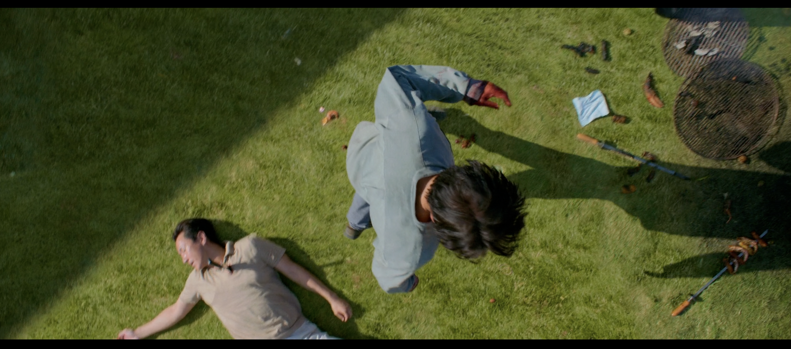
07 / The End
Aan het einde barst alles los. De spanning die de hele film onder de oppervlakte zat, komt ineens naar boven. Het feest van de rijke familie verandert in chaos. Voor mij laat dat zien dat ongelijkheid niet eindeloos stil blijft.
Een belangrijk moment is hoe Mr. Park reageert op geur. Die reactie laat zien hoe diep de afstand tussen de families zit. Voor de Parks is armoede iets wat vies, ongemakkelijk en ver weg voelt. Voor Ki-taek wordt dat een moment van vernedering.
Ki-taek steekt Mr. Park neer en vlucht daarna niet echt naar vrijheid. Hij verdwijnt opnieuw naar beneden, de kelder in. Dat maakt het einde zo sterk: hij breekt even uit, maar het systeem verdwijnt niet. Hij wordt weer onzichtbaar.
“The system turns survival into violence.”
08 / Het Systeem
Aan het einde blijft de vraag hangen: wie is eigenlijk de parasite?
Zijn het de Kims, die zich vastklampen aan de rijke familie om te overleven? Zijn het de Parks, die leven van het werk van mensen onder hen? Of is het groter dan beide families?
Parasite laat zien dat het probleem niet bij één persoon begint. Het zit in het systeem. Een systeem waarin sommige mensen ruimte, licht en veiligheid krijgen, terwijl anderen lager leven, minder keuze hebben en steeds opnieuw moeten vechten om zichtbaar te blijven.
De ramen, trappen, tuin, villa, kelder en het semi-basement vertellen samen één verhaal. Het huis is niet alleen een plek. Het huis is de samenleving in het klein.
“The house is not just a setting. It is the system.”